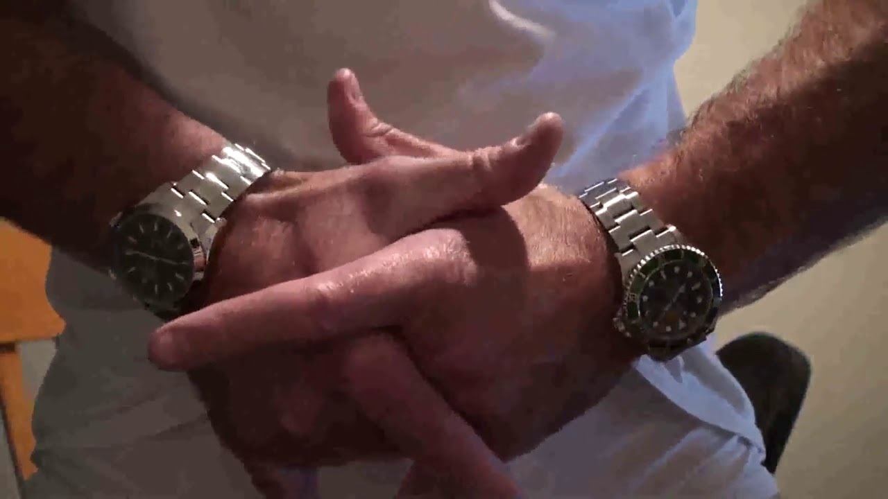

Przyznam się szczerze,
że nie mam żadnego pomysłu
na treść tej strony.
Walidator wymaga ode mnie w tym miejscu nagłówka. Przystaję na wymóg.
Taki randomowy akapit
Tłusty czwartek w 2019 wypada 28 lutego. W czwartek. Przypadek?
Która to godzina?

Ow. Nie ma czasu na wyjaśnienia, jedziemy dalej.
Let's play a game.
-
Punkt pierwszy
- Subpunkt pierwszy
- Subpunkt drugi
- Subpunkt trzeci
- Punkt drugi
- Punkt trzeci
Jeśli też chciałbyś mieś taki zegarek, możesz go pobrać stąd za pomocą FTP lub HTTP
Może teraz chciałbyś wrócić na start? WYBIERZ MNIE!